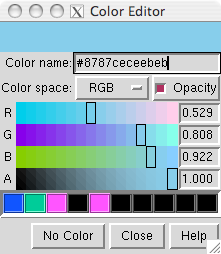

|  |
The Color Editor allows colors to be created interactively. See also: the Palette Editor, colordef, coloring
There are several ways to start the Color Editor, a tool in the Utilities category. In addition, clicking a color well opens the Color Editor (if it is not already open) and activates the well so that it reflects any color changes within the Color Editor. The border of the color well turns white to signify activation.
The color defined in the Color Editor can be:
Each color component is expressed as a value in the range 0–1. Color components are sometimes specified with integers 0–255 instead; if a value > 1 and ≤ 255 is entered, it is interpreted as coming from this scale and automatically divided by 255 to convert it to the 0–1 range.
The Color name field shows a Tk color code consisting of "#" and 12 digits, 4 each for the red, green and blue (RGB) components of a color. Each component is expressed as a hexadecimal number (allowable characters 0123456789abcdef) ranging from 0000 (0 in the decimal system) to ffff (65,535 in the decimal system). Tk color codes can have different numbers of digits, but always a multiple of 3: if 3 digits total, then there is 1 digit per color component with f meaning saturation; if 6 total, there are 2 digits per component with ff meaning saturation (examples); and so on. If a 3-, 6-, or 9-digit code is entered in the Color name field, it will be expanded to 12 digits. Rounding effects may be evident when a shorter, less precise code is expanded. The Tk code reflects the RGB definition of the color shown at the top of the Color Editor, regardless of the Color space setting. Tk color codes do not include transparency information.
The Color Editor can be set to one of the built-in colors by typing the name into the Color name field and hitting return. The field will then revert to the corresponding Tk code.
Clicking the No Color button deletes the color assignments of the items described by the active color well. The ultimate result depends on the situation, because visible color is determined by a hierarchy. Assigning "no color" at an overriding level reveals the colors at the next level in the hierarchy. For example, individual atom and bond colors overrule color assigned at the model level; if "no color" is assigned to a set of atoms, they will assume their model-level colors.
Colors can be saved in the palette, the bar of rectangles near the the bottom of the Color Editor. The currently defined color can be dragged from the top bar to a palette slot; definitions of colors in the palette are saved in the preferences file. Clicking a color in the palette makes it the currently defined color.
The Help button brings up this manual page in a browser window. Close dismisses the Color Editor.